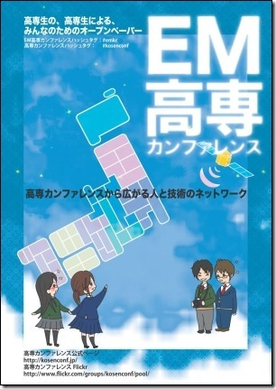

EMKC-Online::Alpha
EMKC-Online::Alpha
現在のお知らせ
広告を募集しています。詳しくは広告募集をご覧ください。
バックナンバー
第1号
- 発行日: 2011年2月4日
- 発行元:株式会社マナスリンク
- 価格: 無料
- 発行部数: 3,000部, 増版: 1,000部
- サイズ: A4, カラー
- ページ数: 28頁

第2号
- 発行日: 2012年7月12日
- 発行元: 株式会社マナスリンク
- 価格: 無料
- 発行部数: 8,000部
- サイズ: A4, カラー
- ページ数: 40頁
オンラインビュワーよりご覧になれます！